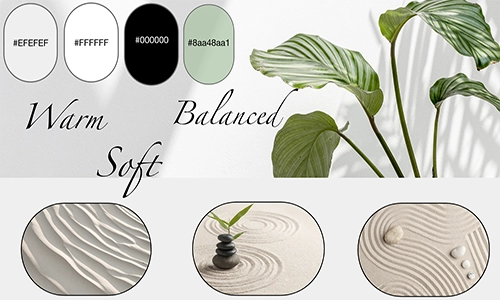
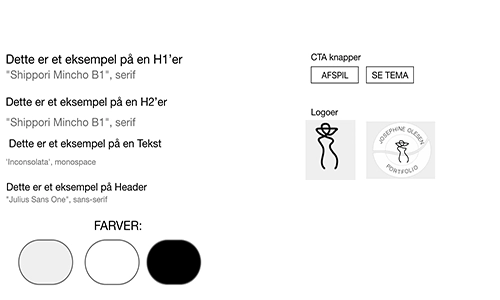
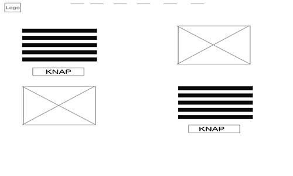
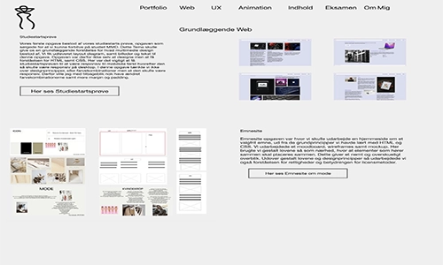

Portfolio Eksamen
Moodboard
Styletile
Proces
I eksamensopgaven var vores mål at udarbejde et portfolio site ud fra de færdigheder vi har lært igennem første semester. Heriblandt skulle HTML, CSS samt Javascript blive brugt. Da opgaven blev sendt ud var det vigtigt for mig at lave en plan for hvordan jeg skulle lave mit portfolio. Ideen var at skulle lave noget overskueligt samt fyldestgørende. Derfor blev jeg hurtig enig om at det skulle være et minimalistisk site. Det sværeste har været at få sat et site op som var minimalistisk men stadig gav alt man havde brug for at vide. Derudover så har jeg haft svært ved hvordan jeg skulle få javascript ind i mit site uden det blev en for stor mundfuld for mig. Jeg har haft et stramt skema, med hvad jeg skulle nå hver dag for at jeg kunne nå at rette til og lave ændringer hvis dette var ønsket. Udviklingsprocessen kan ses igennem XD som er linket under her.
Her ses proces for eksamenWireframe Web
Mockup Web
